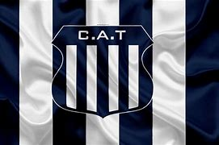

El Club Atlético Talleres, un equipo de fútbol argentino fue fundado el 12 de octubre de 1913. ha tenido una historia rica en el fútbol argentino, compitiendo en diferentes divisiones a lo largo de los años, desde las categorías inferiores hasta la Primera División.la evolución del un club de fútbol como Talleres pueden estar marcadas por numerosos eventos a lo largo del tiempo, incluyendo cambios en la administración, ascensos y descensos de divisiones, así como rivalidades con otros equipos.
.jpg)
El Club Atlético Talleres fue fundado el 1 de junio de 1913 en la ciudad de Córdoba, Argentina. El club es conocido principalmente por su equipo de fútbol, que compite en diversas divisiones del fútbol argentino, pero también cuenta con otras secciones deportivas y actividades. Talleres es uno de los clubes más emblemáticos de la provincia de Córdoba y tiene una rica historia en el fútbol argentino.
Campeonato Nacional (Segunda División de Argentina): Talleres ganó este torneo en dos ocasiones, en 1977 y 1993, lo que le permitió ascender a la Primera División
Copa Conmebol: En 1999, Talleres llegó a la final de la Copa Conmebol, un torneo internacional de clubes sudamericanos, pero fue subcampeón después de perder ante el Club Atlético Lanús
ofesional (Torneo de Copa): En 2021, Talleres tuvo un buen desempeño en la Copa de la Liga Profesional de Argentina, llegando a las instancias finales
Otros logros: El club ha ganado varios campeonatos regionales y locales a lo largo de su historia
.jpg)
Mario Kempes: Posiblemente el jugador más famoso que ha vestido la camiseta de Talleres. Kempes es una leyenda del fútbol argentino, conocido por su papel en la selección argentina en la Copa Mundial de la FIFA 1978, donde fue el máximo goleador y ayudó a Argentina a ganar su primer título mundial. Antes de su éxito internacional, jugó en Talleres y dejó una impresión duradera.
José Luis Saldaño: Apodado "El Nene,"
JORGE VALDANO
"El Piojo" Claudio López
Juan Carlos Heredia
Josefina y Ludmila: Gatos Domesticos
Midas: Fisicoculturismo
Lattini y Ocaña: Adicciones, cocaina cannabis
Sanchez y Maffrand: Cine
Molina y Toledo: Obesidad
Lopez y Baroto: Artes marciales y cuarteto
Herrera y Gira: Noviazgo, matrinomio, familia
Paez y Toledo: Futbol
Pancrazi y Arguello: Arte, pintura
Godoy y Diaz: Noviazgo, matrimonio, familia
Giron y Del Soto: Tabaco y alcohol
Salvatore, Cuello y Luciano: Vdeos juegos
Los colores tradicionales de Talleres son el azul y el blanco
La hinchada del Club Atlético Talleres, conocida como "La Hinchada Más Fiel" o simplemente "La T. Los seguidores de Talleres son conocidos como "tallarines" o "matadores" y son apasionados por su equipo. El club tiene una gran base de seguidores en la ciudad de Córdoba y en otras partes de Argentina.
.jpg)